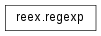
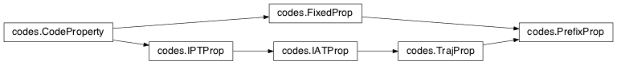

Welcome to FAdo’s documentation¶
FAdo: Tools for Language Models Manipulation
Authors: Rogério Reis & Nelma Moreira
The support of transducers and all its operations, is a collaborativejoint work with Stavros Konstantinidis (St. Mary’s University, Halifax, NS, Canada) (http://cs.smu.ca/~stavros/).
Contributions by
|
|
Page of the project: http://fado.dcc.fc.up.pt.
Version: 1.2
Copyright: 1999-2014 Rogério Reis & Nelma Moreira {rvr,nam}@dcc.fc.up.pt
Faculdade de Ciências da Universidade do Porto
Centro de Matemática da Universidade do Porto
Licence:
This program is free software; you can redistribute it and/or modify it under the terms of the GNU General Public License as published by the Free Software Foundation; either version 2 of the License, or (at your option) any later version.
This program is distributed in the hope that it will be useful, but WITHOUT ANY WARRANTY; without even the implied warranty of MERCHANTABILITY or FITNESS FOR A PARTICULAR PURPOSE. See the GNU General Public License for more details.
You should have received a copy of the GNU General Public License along with this program; if not, write to the Free Software Foundation, Inc., 675 Mass Ave, Cambridge, MA 02139, USA.
What is FAdo?¶
The FAdo system aims to provide an open source extensible high-performance software library for the symbolic manipulation of automata and other models of computation.
To allow high-level programming with complex data structures, easy prototyping of algorithms, and portability (to use in computer grid systems for example), are its main features. Our main motivation is the theoretical and experimental research, but we have also in mind the construction of a pedagogical tool for teaching automata theory and formal languages.
Regular Languages¶
It currently includes most standard operations for the manipulation of regular languages. Regular languages can be represented by regular expressions (regexp) or finite automata, among other formalisms. Finite automata may be deterministic (DFA), non-deterministic (NFA) or generalized (GFA). In FAdo these representations are implemented as Python classes.
Elementary regular languages operations as union, intersection, concatenation, complementation and reverse are implemented for each class. Also several combined operations are available for specific models.
Several conversions between these representations are implemented:
- NFA -> DFA: subset construction
- NFA -> RE: recursive method
- GFA -> RE: state elimination, with possible choice of state orderings
- RE -> NFA: Thompson method, Glushkov method, follow, Brzozowski, and partial derivatives.
- For DFAs several minimization algorithms are available: Moore, Hopcroft, and some incremental algorithms. Brzozowski minimization is available for NFAs.
- An algorithm for hyper-minimization of DFAs
- Language equivalence of two DFAs can be determined by reducing their correspondent minimal DFA to a canonical form, or by the Hopcroft and Karp algorithm.
- Enumeration of the first words of a language or all words of a given length (Cross Section)
- Some support for the transition semigroups of DFAs
Finite Languages¶
Special methods for finite languages are available:
- Construction of a ADFA (acyclic finite automata) from a set of words
- Minimization of ADFAs
- Several methods for ADFAs random generation
- Methods for deterministic cover finite automata (DCFA)
Transducers¶
Several methods for transducers in standard form (SFT) are available:
- Rational operations: union, inverse, reversal, composition, concatenation, star
- Test if a transducer is functional
- Input intersection and Output intersection operations
Codes¶
A language property is a set of languages. Given a property specified by a transducer, several language tests are possible.
- Satisfaction i.e. if a language satisfies the property
- Maximality i.e. the language satisfies the property and is maximal
- Properties implemented by transducers include: input preserving, input altering, trajectories, and fixed properties
- Computation of the edit distance of a regular language, using input altering transducers
Module: Finite Automata (fa)¶
Finite automata manipulation.
Deterministic and non-deterministic automata manipulation, conversion and evaluation.
Class FA (abstract class for Finite Automata)¶
- class fa.FA[source]¶
Bases: common.Drawable
Base class for Finite Automata.
Variables: - States – set of states
- Sigma – alphabet set
- Initial – the initial state
- Final – set of final states
- delta – the transition function
Note
This is just an abstract class. Not to be used directly!!
- addFinal(stateindex)[source]¶
A new state is added to the already defined set of final states.
Parameters: stateindex (int) – index of the new final state
- addSigma(sym)[source]¶
Adds a new symbol to the alphabet.
Parameters: sym (str) – symbol to be added Raises DFAepsilonRedefenition: if sym is Epsilon Note
- There is no problem with duplicate symbols because Sigma is a Set.
- No symbol Epsilon can be added.
- addState(name=None)[source]¶
Adds a new state to an FA. If no name is given a new name is created.
Parameters: name (object) – Name of the state to be added Returns: Current number of states (the new state index) Return type: int Raises DuplicateName: if a state with that name already exists
- conjunction(other)[source]¶
A simple literate invocation of __and__
Parameters: other – the other FA New in version 0.9.6.
- countTransitions()[source]¶
Evaluates the size of FA transitionwise
Returns: the number of transitions Return type: int Changed in version 1.0.
- delFinal(st)[source]¶
Deletes a state from the final states list
Parameters: st (int) – state to be marked as not final
- deleteState(sti)[source]¶
Remove the given state and the transitions related with that state.
Parameters: sti (int) – index of the state to be removed Raises DFAstateUnknown: if state index does not exist
- disj(other)[source]¶
Another simple literate invocation of __or__
Parameters: other – the other FA New in version 0.9.6.
- dotFormat(size='20, 20', direction='LR', sep='n')[source]¶
A dot representation
Parameters: Returns: the dot representation
Return type: str
New in version 0.9.6.
Changed in version 0.9.8.
- eliminateDeadName()[source]¶
Eliminates dead state name (common.DeadName) renaming the state
Attention
works inplace
New in version 1.2.
- equivalentP(other)[source]¶
Test equivalence
Parameters: other – the other automata Return type: bool New in version 0.9.6.
- finalP(state)[source]¶
Tests if a state is final
Parameters: state (int) – state index Return type: bool
- finalsP(states)[source]¶
Tests if al the states in a set are final
Parameters: states (set) – set of state indexes Return type: bool New in version 1.0.
- hasStateIndexP(st)[source]¶
Checks if a state index pertains to an FA
Parameters: st (int) – index of the state Return type: bool
- indexList(lstn)[source]¶
Converts a list of stateNames into a set of stateIndexes.
Parameters: lstn (list) – list of names Returns: the list of state indexes Return type: Set of int Raises DFAstateUnknown: if a state name is unknown
- initialP(state)[source]¶
Tests if a state is initial
Parameters: state (int) – state index Return type: bool
- initialSet()[source]¶
The set of initial states
Returns: the set of the initial states Return type: set of States
- inputS(i)[source]¶
Input labels coming out of state i
Parameters: i (int) – state Returns: set of input labels Return type: set of str New in version 1.0.
- renameState(st, name)[source]¶
Rename a given state.
Parameters: Returns: self
Note
Deals gacefully both with int and str names in the case of name collision.
Attention
the object is modified in place
- renameStates(nameList=None)[source]¶
Renames all states using a new list of names.
Parameters: nameList (list) – list of new names Raises DFAerror: if provided list is too short Returns: self Note
If no list of names is given, state indexes are used.
Attention
the object is modified in place
- reversal()[source]¶
Returns a NFA that recognizes the reversal of the language
Returns: NFA recognizing reversal language Return type: NFA
- same_nullability(s1, s2)[source]¶
Tests if this two states have the same nullability
Parameters: Return type: bool
- setFinal(statelist)[source]¶
Sets the final states of the FA
Parameters: statelist (int|list|set) – a list (or set) of final states indexes Caution
it erases any previous definition of the final state set.
- setInitial(stateindex)[source]¶
Sets the initial state of a FA
Parameters: stateindex (int) – index of the initial state
- setSigma(symbolSet)[source]¶
Defines the alphabet for the FA.
Parameters: symbolSet (list|set) – alphabet symbols
- stateIndex(name, autoCreate=False)[source]¶
Index of given state name.
Parameters: Returns: state index
Return type: int
Raises DFAstateUnknown: if the state name is unknown and autoCreate==False
Note
Replaces stateName
Note
If the state name is not known and flag is set creates it on the fly
New in version 1.0.
- stateName(*args, **kwargs)[source]¶
Index of given state name.
Parameters: Returns: state index
Return type: int
Raises DFAstateUnknown: if the state name is unknown and autoCreate==False
Deprecated since version 1.0: Use: stateIndex() instead
Class SemiDFA (Semi-Automata class)¶
- class fa.SemiDFA[source]¶
Bases: common.Drawable
Class of automata without initial or final states
Variables: - States – list of states
- delta – transition function
- Sigma – alphabet set
Class OFA (one-way finite automata class)¶
- class fa.OFA[source]¶
Bases: fa.FA
Base class for one-way automata .. inheritance-diagram:: OFA
- SPRegExp()[source]¶
Checks if FA is SP (Serial-PArallel), and if so returns the regular expression whose language is recognised by the FA
Returns: equivalent regular expression Return type: regexp Raises NotSP: if the automaton is not Serial-Parallel See also
Moreira & Reis, Fundamenta Informatica, Series-Parallel automata and short regular expressions, n.91 3-4, pag 611-629. http://www.dcc.fc.up.pt/~nam/publica/spa07.pdf
Note
Automata must be Serial-Parallel
- acyclicP(strict=True)[source]¶
Checks if the FA is acyclic
Parameters: strict (bool) – if not True loops are allowed Returns: True if the FA is acyclic Return type: bool
- addTransition(st1, sym, st2)[source]¶
Add transition :param int st1: departing state :param str sym: label :param int st2: arriving state
- allRegExps()[source]¶
Evaluates the alphabetic length of the equivalent regular expression using every possible order of state elimination.
Return type: list of tuples (int, list of states)
- complete(dead='@DeaD')[source]¶
Transforms the automata into a complete one. If Sigma is empty nothing is done.
Parameters: dead (str) – dead state name Returns: the complete FA Return type: DFA Note
Adds a dead state (if necessary) so that any word can be processed with the automata. The new state is named dead, so this name should never be used for other purposes.
Attention
The object is modified in place.
Changed in version 1.0.
- deleteStates(del_states)[source]¶
To be implemented below
Parameters: del_states (list) – states to be deleted
- static dotDrawTransition(st1, label, st2, sep='n')[source]¶
Draw a transition in Dot Format
Parameters: Return type: str
- dump()[source]¶
Returns a python representation of the object
Returns: the python representation (Tags,States,Sigma,delta,Initial,Final) Return type: tuple
- eliminateSingles()[source]¶
Eliminates every state that only have one successor and one predecessor.
Returns: GFA after eliminating states Return type: GFA
- eliminateStout(st)[source]¶
Eliminate all transitions outgoing from a given state
Parameters: st (int) – the state index to loose all outgoing transitions Attention
performs in place alteration of the automata
New in version 0.9.6.
- emptyP()[source]¶
Tests if the automaton accepts a empty language
Return type: bool New in version 1.0.
- evalNumberOfStateCycles()[source]¶
Evaluates the number of cycles each state participates
Returns: state->list of cycle lengths Return type: dict
- minimalBrzozowski()[source]¶
Constructs the equivalent minimal DFA using Brzozowski’s algorithm
Returns: equivalent minimal DFA Return type: DFA
- minimalBrzozowskiP()[source]¶
Tests if the FA is minimal using Brzozowski’s algorithm
Return type: bool
- reCG()[source]¶
Regular expression from state elimination whose language is recognised by the FA. Uses a heuristic to choose the order of elimination.
Returns: the equivalent regular expression Return type: regexp
- reCG_nn()[source]¶
Regular expression from state elimination whose language is recognised by the FA. Uses a heuristic to choose the order of elimination. The FA is not normalized before the state elimination.
Returns: the equivalent regular expression Return type: regexp
- reDynamicCycleHeuristic()[source]¶
State elimination Heuristic based on the number of cycles that passes through each state. Here those numbers are evaluated dynamically after each elimination step
Returns: an equivalent regular expression Return type: regexp See also
Nelma Moreira, Davide Nabais, and Rogério Reis. State elimination ordering strategies: Some experimental results. Proc. of 11th Workshop on Descriptional Complexity of Formal Systems (DCFS10), pages 169-180.2010. DOI: 10.4204/EPTCS.31.16
- reStaticCycleHeuristic()[source]¶
State elimination Heuristic based on the number of cycles that passes through each state. Here those numbers are evaluated statically in the beginning of the process
Returns: a equivalent regular expression Return type: regexp See also
Nelma Moreira, Davide Nabais, and Rogério Reis. State elimination ordering strategies: Some experimental results. Proc. of 11th Workshop on Descriptional Complexity of Formal Systems (DCFS10), pages 169-180.2010. DOI: 10.4204/EPTCS.31.16
- re_stateElimination(order=None)[source]¶
Regular expression from state elimination whose language is recognised by the FA. The FA is normalized before the state elimination.
Parameters: order (list) – state elimination sequence Returns: the equivalent regular expression Return type: regexp
- re_stateElimination_nn(order=None)[source]¶
Regular expression from state elimination whose language is recognised by the FA. The FA is not normalized before the state elimination.
Parameters: order (list) – state elimination sequence Returns: the equivalent regular expression Return type: regexp
- regexpSE()[source]¶
A regular expression obtained by state elimination algorithm whose language is recognised by the FA.
Returns: the equivalent regular expression Return type: regexp
- topoSort()[source]¶
Topological order for the FA
Returns: List of state indexes Return type: list of int Note
self loops are taken in consideration
Class DFA (Deterministic Finite Automata)¶
- class fa.DFA[source]¶
Bases: fa.OFA
Class for Deterministic Finite Automata.
- Delta(state, symbol)[source]¶
Evaluates the action of a symbol over a state
Parameters: - state (int) – state index
- symbol – symbol
Returns: the action of symbol over state
Return type: int
- aEquiv()[source]¶
Computes almost equivalence, used by hyperMinimial
Returns: partition of states Return type: dictionary Note
may be optimized to avoid dupped
- addTransition(sti1, sym, sti2)[source]¶
Adds a new transition from sti1 to sti2 consuming symbol sym.
Parameters: Raises DFAnotNFA: if one tries to add a non deterministic transition
- completeMinimal()[source]¶
Completes a DFA assuming it is a minimal and avoiding de destruction of its minimality If the automaton is not complete, all the non final states are checked to see if tey are not already a dead state. Only in the negative case a new (dead) state is added to the automaton.
Return type: DFA Attention
The object is modified in place. If the alphabet is empty nothing is done
- computeKernel()[source]¶
The Kernel of a ICDFA is the set of states that accept a non finite language.
Returns: triple (comp, center , mark) where comp are the strongly connected components, center the set of center states and mark the kernel states Return type: tuple
- concat(fa2, strict=False)[source]¶
Concatenation of two DFAs. If DFAs are not complete, they are completed.
Parameters: - strict (Boolean) – should alphabets be checked?
- fa2 (DFA) – the second DFA
Returns: the result of the concatenation
Return type: DFA
Raises DFAdifferentSigma: if alphabet are not equal
- concatI(fa2, strict=False)[source]¶
Concatenation of two DFAs.
Parameters: - fa2 (DFA) – the second DFA
- strict (Boolean) – should alphabets be checked?
Returns: the result of the concatenation
Return type: DFA
Raises DFAdifferentSigma: if alphabet are not equal
New in version 0.9.5.
Note
this is to be used with non complete DFAs
- delTransition(sti1, sym, sti2, _no_check=False)[source]¶
Remove a transition if existing and perform cleanup on the transition function’s internal data structure.
Parameters: Note
Unused alphabet symbols will be discarded from Sigma.
- deleteStates(del_states)[source]¶
Delete given iterable collection of states from the automaton.
Parameters: del_states – collection of int representing states Note
delta function will always be rebuilt, regardless of whether the states list to remove is a suffix, or a sublist, of the automaton’s states list.
- dist()[source]¶
Evaluate the distinguishability language for a DFA
Return type: DFA See also
Cezar Câmpeanu, Nelma Moreira, Rogério Reis: The distinguishability operation on regular languages. NCMA 2014: 85-100
New in version 0.9.8.
- distMin()[source]¶
Evaluates the list of minimal words that distinguish each pair of states
Returns: set of minimal distinguishing words Return type: FL New in version 0.9.8.
Attention
If the DFA is not minimal, the method loops forever
- distR()[source]¶
Evaluate the right distinguishability language for a DFA
Return type: DFA - ..seealso:: Cezar Câmpeanu, Nelma Moreira, Rogério Reis:
- The distinguishability operation on regular languages. NCMA 2014: 85-100
- distRMin()[source]¶
Compute distRMin for DFA
:rtype FL
- ..seealso:: Cezar Câmpeanu, Nelma Moreira, Rogério Reis:
- The distinguishability operation on regular languages. NCMA 2014: 85-100
- distTS()[source]¶
Evaluate the two-sided distinguishability language for a DFA
Return type: DFA - ..seealso:: Cezar Câmpeanu, Nelma Moreira, Rogério Reis:
- The distinguishability operation on regular languages. NCMA 2014: 85-100
- enumDFA(n=None)[source]¶
returns the set of words of words of length up to n accepted by self :param n: highest length or all words if finite :type n: int
Return type: list of strings or None
- equal(other)[source]¶
Verify if the two automata are equivalent. Both are verified to be minimum and complete, and then one is matched against the other... Doesn’t destroy either dfa...
Parameters: other (DFA) – the other DFA Return type: bool
- evalSymbol(init, sym)[source]¶
Returns the state reached from given state through a given symbol.
Parameters: - init (set or list of int) – set of current states indexes
- sym (str) – symbol to be consumed
Returns: reached state
Return type: int
Raises: - DFAsymbolUnknown – if symbol not in alphabet
- DFAstopped – if transition function is not defined for the given input
- evalSymbolI(init, sym)[source]¶
Returns the state reached from a given state.
Parameters: Returns: reached state or -1
Return type: set of int
Raises DFAsymbolUnknown: if symbol not in alphabet
New in version 0.9.5.
Note
this is to be used with non complete DFAs
- evalSymbolL(ls, sym)[source]¶
Returns the set of states reached from a given set of states through a given symbol
Parameters: - ls (set of int) – set of states indexes
- sym (str) – symbol to be read
Returns: set of reached states
Return type: set of int
- evalSymbolLI(ls, sym)[source]¶
Returns the set of states reached from a given set of states through a given symbol
Parameters: - ls (set of int) – set of current states
- sym (str) – symbol to be consumed
Returns: set of reached states
Return type: set of int
New in version 0.9.5.
Note
this is to be used with non complete DFAs
- evalWordP(word, initial=None)[source]¶
Verifies if the DFA recognises a given word
Parameters: - word (list of symbols.) – word to be recognised
- initial (int) – starting state index
Return type: bool
- finalCompP(s)[source]¶
Verifies if there is a final state in strongly connected component containing s.
Parameters: s (int) – state Returns: 1 if yes, 0 if no
- hasTrapStateP()[source]¶
Tests if the automaton has a dead trap state
Return type: bool New in version 1.1.
- hyperMinimal(strict=False)[source]¶
Hyperminization of a minimal DFA
Parameters: strict (bool) – if strict=True it first minimizes the DFA Returns: an hyperminimal DFA Return type: DFA See also
M. Holzer and A. Maletti, An nlogn Algorithm for Hyper-Minimizing a (Minimized) Deterministic Automata, TCS 411(38-39): 3404-3413 (2010)
Note
if strict=False minimality is assumed
- inDegree(st)[source]¶
Returns the in-degree of a given state in an FA
Parameters: st (int) – index of the state Return type: int
- initialComp()[source]¶
Evaluates the connected component starting at the initial state.
Returns: list of state indexes in the component Return type: list of int
- initialP(state)[source]¶
Tests if a state is initial
Parameters: state (int) – state index Return type: bool
- initialSet()[source]¶
The set of initial states
Returns: the set of the initial states Return type: set of States
- joinStates(lst)[source]¶
Merge a list of states.
Parameters: lst (iterable of state indexes.) – set of equivalent states
- markNonEquivalent(s1, s2, data)[source]¶
Mark states with indexes s1 and s2 in given map as non equivalent states. If any back-effects exist, apply them.
Parameters:
- mergeStates(f, t)[source]¶
Merge the first given state into the second. If the first state is an initial state the second becomes the initial state.
Parameters: Attention
It is up to the caller to remove the disconnected state. This can be achieved with `trim().
- minimal(method='minimalHopcroft', complete=True)[source]¶
Evaluates the equivalent minimal complete DFA
Parameters: - method – method to use in the minimization
- complete (bool) – should the result be completed?
Returns: equivalent minimal DFA
Return type: DFA
- minimalHKP()[source]¶
Tests the DFA’s minimality using Hopcroft and Karp’s state equivalence algorithm
Returns: bool See also
J. E. Hopcroft and R. M. Karp.A Linear Algorithm for Testing Equivalence of Finite Automata.TR 71–114. U. California. 1971
Attention
The automaton must be complete.
- minimalHopcroft()[source]¶
Evaluates the equivalent minimal complete DFA using Hopcroft algorithm
Returns: equivalent minimal DFA Return type: DFA See also
John Hopcroft,An nlog{n} algorithm for minimizing states in a finite automaton.The Theory of Machines and Computations.AP. 1971
- minimalIncremental(minimal_test=False)[source]¶
Minimizes the DFA with an incremental method using the Union-Find algorithm and memoized non-equivalence intermediate results
Parameters: minimal_test (bool) – starts by verifying that the automaton is not minimal? Returns: equivalent minimal DFA Return type: DFA See also
- Almeida and N. Moreira and and R. Reis.Incremental DFA minimisation. CIAA 2010. LNCS 6482. pp 39-48. 2010
- minimalMoore()[source]¶
Evaluates the equivalent minimal automata with Moore’s algorithm
See also
John E. Hopcroft and Jeffrey D. Ullman, Introduction to Automata Theory, Languages, and Computation, AW, 1979
Returns: minimal complete DFA Return type: DFA
- minimalMooreSq()[source]¶
Evaluates the equivalent minimal complete DFA using Moore’s (quadratic) algorithm
See also
John E. Hopcroft and Jeffrey D. Ullman, Introduction to Automata Theory, Languages, and Computation, AW, 1979
Returns: equivalent minimal DFA Return type: DFA
- minimalMooreSqP()[source]¶
Tests if a DFA is minimal using the quadratic version of Moore’s algorithm
Return type: bool
- minimalNCompleteP()[source]¶
Tests if a non necessarely complete DFA is minimal, i.e., if the DFA is non complete, if the minimal complete has only one more state.
Returns: True if not minimal Return type: bool Attention
obsolete: use minimalP
- minimalNotEquivP()[source]¶
Tests if the DFA is minimal by computing the set of distinguishable (not equivalent) pairs of states
Return type: bool
- minimalP(method='minimalHopcroft')[source]¶
Tests if the DFA is minimal
Parameters: method – the minimization algorithm to be used Return type: bool ..note: if DFA non complete test if complete minimal has one more state
- minimalWatson(test_only=False)[source]¶
Evaluates the equivalent minimal complete DFA using Waton’s incremental algorithm
Parameters: test_only (bool) – is it only to test minimality Returns: equivalent minimal DFA Return type: DFA Raises DFAnotComplete: if automaton is not complete - ..attention::
- automaton must be complete
- minimalWatsonP()[source]¶
Tests if a DFA is minimal using Watson’s incremental algorithm
Return type: bool
- notequal(other)[source]¶
Test non equivalence of two DFAs
Parameters: other (DFA) – the other DFA Return type: bool
- pairGraph()[source]¶
Returns pair graph
Return type: DiGraphVM See also
A graph theoretic approach to automata minimality. Antonio Restivo and Roberto Vaglica. Theoretical Computer Science, 429 (2012) 282-291. doi:10.1016/j.tcs.2011.12.049 Theoretical Computer Science, 2012 vol. 429 (C) pp. 282-291. http://dx.doi.org/10.1016/j.tcs.2011.12.049
- print_data(data)[source]¶
Prints table of compatibility (in the context of the minimalization algorithm).
Parameters: data – data to print
- product(other, complete=True)[source]¶
Returns a DFA resulting of the simultaneous execution of two DFA. No final states set.
Parameters: - other – the other DFA
- complete (bool) – evaluate product as a complete DFA
Return type: DFA
- regexp()[source]¶
Returns a regexp for the current DFA considering the recursive method. Very inefficent.
Returns: a regexp equivalent to the current DFA Return type: regexp
- reorder(dicti)[source]¶
Reorders states according to given dictionary. Given a dictionary (not necessarily complete)... reorders states accordingly.
:param dicti :type dicti: dictionary
- reverseTransitions(rev)[source]¶
Evaluate reverse transition function.
Parameters: rev (DFA) – DFA in which the reverse function will be stored
- sMonoid()[source]¶
Evaluation of the syntactic monoid of a DFA
Returns: the semigroup Return type: SSemiGroup
- sSemigroup()[source]¶
Evaluation of the syntactic semigroup of a DFA
Returns: the semigroup Return type: SSemiGroup
- shuffle(other, strict=False)[source]¶
Shuffle of two languages: L1 W L2
Parameters: - other (DFA) – second automaton
- strict (bool) – should the alphabets be necessary equal?
Return type: DFA
See also
C. Câmpeanu, K. Salomaa and S. Yu, Tight lower bound for the state complexity of shuffle of regular languages. J. Autom. Lang. Comb. 7 (2002) 303–310.
- sop(other)[source]¶
Strange operation
Parameters: other (DFA) – the other automaton Return type: DFA New in version 1.2b2.
- star(flag=False)[source]¶
Star of a DFA. If the DFA is not complete, it is completed.
..versionchanged: 0.9.6
Parameters: flag (bool) – plus instead of star Returns: the result of the star Return type: DFA
- stateChildren(state, strict=False)[source]¶
Set of children of a state
Parameters: Returns: map children -> multiplicity
Return type: dictionary
- subword()[source]¶
- Returns a dfa that recognizes subword(L(self))
Return type: dfa New in version 1.1.
- succintTransitions()[source]¶
Collects the transition information in a compact way suitable for graphical representation. :rtype: list of tupples
New in version 0.9.8.
- syncPower()[source]¶
Evaluates the power automata for the action of each symbol
Returns: The power automata being the set of all states the initial state and all singleton states final. Return type: DFA
- syncWords()[source]¶
Evaluates the regular expression corresponding to the synchronizing pwords of the automata.
Returns: a regular expression of the sync words of the automata Return type: regexp
- toADFA()[source]¶
Try to convert DFA to ADFA
Returns: the same automaton as a ADFA Return type: ADFA Raises notAcyclic: if this is not an acyclic DFA New in version 1.2.
- uniqueRepr()[source]¶
Normalise unique string for the string icdfa’s representation.
See also
TCS 387(2):93-102, 2007 http://www.ncc.up.pt/~nam/publica/tcsamr06.pdf
Returns: normalised representation Return type: list Raises DFAnotComplete: if DFA is not complete
- unmark()[source]¶
Unmarked NFA that corresponds to a marked DFA: in which each alfabetic symbol is a tuple (symbol, index)
Returns: a NFA Return type: NFA
- usefulStates(initial_states=None)[source]¶
Set of states reacheable from the given initial state(s) that have a path to a final state.
Parameters: initial_states (iterable of int) – starting states Returns: set of state indexes Return type: set of int
- static vDescription()[source]¶
Generation of Verso interface description
New in version 0.9.5.
Returns: the interface list
- witnessDiff(other)[source]¶
Returns a witness for the difference of two DFAs and:
0 if the witness belongs to the other language 1 if the witness belongs to the self language Parameters: other (DFA) – the other DFA Returns: a witness word Return type: list of symbols Raises DFAequivalent: if automata are equivalent
Class NFA (Nondeterministic Finite Automata)¶
- class fa.NFA[source]¶
Bases: fa.OFA
Class for Non-deterministic Finite Automata (epsilon-transitions allowed).
- addEpsilonLoops()[source]¶
Add epsilon loops to every state :return: self
Attention
in-place modification
New in version 1.0.
- addInitial(stateindex)[source]¶
Add a new state to the set of initial states.
Parameters: stateindex (int) – index of new initial state
- addTransition(sti1, sym, sti2)[source]¶
Adds a new transition. Transition is from sti1 to sti2 consuming symbol sym. sti2 is a unique state, not a set of them.
Parameters:
- addTransitionQ(srcI, dest, symb, qfuture, qpast)[source]¶
Add transition to the new transducer instance.
Parameters: New in version 1.0.
- autobisimulation()[source]¶
Largest right invariant equivalence between states of the NFA
Returns: Incomplete equivalence relation (transitivity, and reflexivity not calculated) as a set of unordered pairs of states Return type: Set of frozensets See also
Ilie&Yu, 2003
- autobisimulation2()[source]¶
Alternative space-efficient definition of NFA.autobisimulation.
Returns: Incomplete equivalence relation (reflexivity, symmetry, and transitivity not calculated) as a set of pairs of states Return type: list of tuples
- closeEpsilon(st)[source]¶
Add all non epsilon transitions from the states in the epsilon closure of given state to given state.
Parameters: st (int) – state index
- concat(other, middle='middle')[source]¶
Concatenation of NFA
Parameters: - middle (str) – glue state name
- other (NFA|DFA) – the other NFA
Returns: the result of the concatenation
Return type: NFA
- delTransition(sti1, sym, sti2, _no_check=False)[source]¶
Remove a transition if existing and perform cleanup on the transition function’s internal data structure.
Parameters: Note
unused alphabet symbols will be discarded from Sigma.
- deleteStates(del_states)[source]¶
Delete given iterable collection of states from the automaton.
Parameters: del_states (set|list) – collection of int representing states Note
delta function will always be rebuilt, regardless of whether the states list to remove is a suffix, or a sublist, of the automaton’s states list.
- dotFormat(size='20, 20', direction='LR', sep='n')[source]¶
A dot representation :arg direction: direction of drawing :arg size: size of image :arg sep: line separator :return: the dot representation type sep: str :type direction: str :type size: str :rtype: str
New in version 0.9.6.
Changed in version 0.9.8.
- elimEpsilon()[source]¶
Eliminate epsilon-transitions from this automaton.
:rtype : NFA
Attention
performs in place modification of automaton
Changed in version 1.1.1.
- eliminateEpsilonTransitions()[source]¶
Eliminates all epslilon-transitions with no state addition
Attention
in-place modification
- eliminateTSymbol(symbol)[source]¶
Delete all trasitions through a given symbol
Parameters: symbol (str) – the symbol to be excluded from delta Attention
in place alteration of the automata
New in version 0.9.6.
- enumNFA(n=None)[source]¶
returns the set of words of words of length up to n accepted by self :param n: highest lenght or all words if finite :type n: int
Return type: list of strings or None
- epsilonClosure(st)[source]¶
Returns the set of states epsilon-connected to from given state or set of states.
Parameters: st (int|set) – state index or set of state indexes Returns: the list of state indexes epsilon connected to st Return type: set of int Attention
st must exist.
- epsilonPaths(start, end)[source]¶
All states in all paths (DFS) through empty words from a given starting state to a given ending state.
Parameters: Returns: states in epsilon paths from start to end
Return type: set of states
- equivReduced(equiv_classes)[source]¶
Equivalent NFA reduced according to given equivalence classes.
Parameters: equiv_classes (UnionFind) – Equivalence classes Returns: Equivalent NFA Return type: NFA
- evalSymbol(stil, sym)[source]¶
Set of states reacheable from given states through given symbol and epsilon closure.
Parameters: - stil (set|list) – set of current states
- sym (str) – symbol to be consumed
Returns: set of reached state indexes
Return type: set[int]
Raises DFAsymbolUnknown: if symbol is not in alphabet
- evalWordP(word)[source]¶
Verify if the NFA recognises given word.
Parameters: word (str) – word to be recognised Return type: bool
- finalCompP(s)[source]¶
Verify whether there is a final state in strongly connected component containing given state.
Parameters: s (int) – state index Returns: :: bool
- hasTransitionP(state, symbol=None, target=None)[source]¶
Whether there’s a transition from given state, optionally through given symbol, and optionally to a specific target.
Parameters: Returns: if there is a transition
Return type: bool
- homogenousP(x)[source]¶
Whether this NFA is homogenous; that is, for all states, whether all incoming transitions to that state are through the same symbol.
Parameters: x – dummy parameter to agree with the method in DFAr Return type: bool
- initialComp()[source]¶
Evaluate the connected component starting at the initial state.
Returns: list of state indexes in the component Return type: list of int
- lEquivNFA()[source]¶
Equivalent NFA obtained from merging equivalent states from autobisimulation of this NFA’s reversal.
Return type: NFA Note
returns copy of self if autobisimulation renders no equivalent states.
- lrEquivNFA()[source]¶
Equivalent NFA obtained from merging equivalent states from autobisimulation of this NFA, and from autobisimulation of its reversal; i.e., merges all states that are equivalent w.r.t. the largest right invariant and largest left invariant equivalence relations.
Return type: NFA Note
returns copy of self if autobisimulations render no equivalent states.
- minimal()[source]¶
Evaluates the equivalent minimal DFA
Returns: equivalent minimal DFA Return type: DFA
- minimalDFA()[source]¶
Evaluates the equivalent minimal complete DFA
Returns: equivalent minimal DFA Return type: DFA
- product(other)[source]¶
Returns a NFA (skeletom) resulting of the simultaneous execution of two DFA.
Parameters: other (NFA) – the other automata Return type: NFA Note
No final states are set.
Attention
- the name EmptySet is used in a unique special state name
- the method uses 3 internal functions for simplicity of code (really!)
- rEquivNFA()[source]¶
Equivalent NFA obtained from merging equivalent states from autobisimulation of this NFA.
Return type: NFA Note
returns copy of self if autobisimulation renders no equivalent states.
- reorder(dicti)[source]¶
Reorder states indexes according to given dictionary.
Parameters: dicti (dictionary) – state name reorder Note
dictionary does not have to be complete
- reversal()[source]¶
Returns a NFA that recognizes the reversal of the language
Returns: NFA recognizing reversal language Return type: NFA
- reverseTransitions(rev)[source]¶
Evaluate reverse transition function.
Parameters: rev (NFA) – NFA in which the reverse function will be stored
- setInitial(statelist)[source]¶
Sets the initial states of an NFA
Parameters: statelist (set|list|int) – an iterable of initial state indexes
- shuffle(other)[source]¶
Shuffle of a NFA
Parameters: other (FA) – an FA Returns: the resulting NFA Return type: NFA
- star(flag=False)[source]¶
Kleene star of a NFA
Parameters: flag (Boolean) – plus instead of star Returns: the resulting NFA Return type: NFA
- stateChildren(state, strict=False)[source]¶
Set of children of a state
Parameters: Returns: children states
Return type: Set of int
- succintTransitions()[source]¶
Collects the transition information in a concat way suitable for graphical representation. :rtype: list
- toDFA()[source]¶
Construct a DFA equivalent to this NFA, by the subset construction method.
Return type: DFA Note
valid to epsilon-NFA
- toNFAr()[source]¶
NFA with the reverse mapping of the delta function.
Returns: shallow copy with reverse delta function added Return type: NFAr
- usefulStates(initial_states=None)[source]¶
Set of states reacheable from the given initial state(s) that have a path to a final state.
Parameters: initial_states (set of int or list of int) – set of initial states Returns: set of state indexes Return type: set of int
Class NFAr (Nondeterministic Finite Automata w/ reverse transition f.)¶
- class fa.NFAr[source]¶
Bases: fa.NFA
Class for Non-deterministic Finite Automata with reverse delta function added by construction.
Variables: deltaReverse – the reversed transition function Note
Includes efficient methods for merging states.
- addTransition(sti1, sym, sti2)[source]¶
Adds a new transition. Transition is from sti1 to sti2 consuming symbol sym. sti2 is a unique state, not a set of them. Reversed transition function is also computed
Parameters:
- delTransition(sti1, sym, sti2, _no_check=False)[source]¶
Remove a transition if existing and perform cleanup on the transition function’s internal data structure and in the reversal transition function
Parameters:
- deleteStates(del_states)[source]¶
Delete given iterable collection of states from the automaton. Performe deletion in the transition function and its reversal.
Parameters: del_states (set or list of int) – collection of int representing states
- elimEpsilonO()[source]¶
Eliminate epsilon-transitions from this automaton, with reduction of states through elimination of epsilon-cycles, and single epsilon-transition cases.
Returns: itself Return type: Attention
performs inplace modification of automaton
- homogenousP(inplace=False)[source]¶
Checks is the automaton is homogenous, i.e.the transitions that reaches a state have all the same label.
Parameters: inplace (bool) – if True performs epsilon transitions elimination Returns: True if homogenous Return type: bool
- mergeStates(f, t)[source]¶
Merge the first given state into the second. If first state is an initial or final state, the second becomes respectively an initial or final state.
Parameters: Attention
It is up to the caller to remove the disconnected state. This can be achieved with `trim().
- mergeStatesSet(tomerge, target=None)[source]¶
Merge a set of states with a target merge state. If the states in the set have transitions among them, those transitions will be directly merged into the target state.
Parameters: - tomerge (Set of initegers) – set of states to merge with target
- target (int) – optional target state
Note
if target state is not given, the minimal index with be considered.
Attention
The states of the list will become unreacheable, but won’t be removed. It is up to the caller to remove them. That can be achieved with trim().
- toNFA()[source]¶
Turn into an instance of NFA, and remove the reverse mapping of the delta function.
Returns: shallow copy without reverse delta function Return type: NFA
- unlinkSoleIncoming(state)[source]¶
If given state has only one incoming transition (indegree is one), and it’s through epsilon, then remove such transition and return the source state.
Parameters: state (int) – state to check Returns: source state Return type: int or None Note
if conditions aren’t met, returned source state is None, and automaton remains unmodified.
- unlinkSoleOutgoing(state)[source]¶
If given state has only one outgoing transition (outdegree is one), and it’s through epsilon, then remove such transition and return the target state.
Parameters: state (int) – state to check Returns: target state Return type: int or None Note
if conditions aren’t met, returned target state is None, and automaton remains unmodified.
Class GFA (Generalized Finite Automata)¶
- class fa.GFA[source]¶
Bases: fa.OFA
Class for Generalized Finite Automata: NFA with a unique initial state and transitions are labeled with regexp.
- addTransition(sti1, sym, sti2)[source]¶
- Adds a new transition from sti1 to sti2 consuming symbol sym. Label of the transition function
- is a regexp.
Parameters: Raises DFAepsilonRedefenition: if sym is Epsilon
- completeDelta()[source]¶
Adds empty set transitions between the automatons final and initial states in order to make it complete. It’s only meant to be used in the final stage of SEA...
- eliminateState(st)[source]¶
Deletes a state and updates the automaton
Parameters: st (state index) – the state to be deleted
- normalize()[source]¶
Create a single initial and final state with Epsilon transitions.
Attention
works in place
- reorder(dictio)[source]¶
Reorder states indexes according to given dictionary.
Parameters: dictio (dictionary) – order Note
dictionary does not have to be complete
- stateChildren(state, strict=False)[source]¶
Set of children of a state
Parameters: Returns: map: children -> alphabetic length
Return type: dictionary
Class SSemiGroup (Syntactic SemiGroup)¶
- class fa.SSemiGroup[source]¶
Bases: object
Class support for the Syntactic SemiGroup.
Variables: - elements – list of tuples representing the transformations
- words – a list of pairs (index of the prefix transformation, index of the suffix char)
- gen – a list of the max index of each generation
- Sigma – set of symbols
- WordI(i)[source]¶
Representative of an element given as index
Parameters: i (int) – index of the element Returns: the first word originating the element Return type: str
- WordPS(pref, sym)[source]¶
Representative of an element given as prefix symb
Parameters: Returns: word
Return type: str
Class EnumL (Language Enumeration)¶
- class fa.EnumL(aut, store=False)[source]¶
Bases: object
Class for enumerate FA languages
Variables: - aut – Automaton of the language
- tmin – table for minimal words for each s in aut.States
- Words – list of words (if stored)
- Sigma – alphabet
New in version 0.9.8.
See also
Efficient enumeration of words in regular languages, M. Ackerman and J. Shallit, Theor. Comput. Sci. 410, 37, pp 3461-3470. 2009. http://dx.doi.org/10.1016/j.tcs.2009.03.018
- enum(m)[source]¶
Enumerates the first m words of L(A) according to the lexicographic order if there are at least m words. Otherwise, enumerates all words accepted by A.
Parameters: m (int) –
- enumCrossSection(n)[source]¶
Enumerates the nth cross-section of L(A)
Parameters: n (int) – nonnegative integer
Functions¶
- fa.saveToString(aut, sep='&')[source]¶
Finite automata definition as a string using the input format.
New in version 0.9.5.
Changed in version 0.9.6: Names are now used instead of indexes.
Changed in version 0.9.7: New format with quotes and alphabet
Parameters: - aut (FA) – the FA
- sep (str) – separation between lines
Returns: the representation
Return type: str
Module: Common Definitions (“common”)¶
Common definitions for FAdo files
Module: FAdo IO Functions (“fio”)¶
In/Out.
FAdo IO.
Class ParserFAdo (Yappy parser for FAdo FA files)¶
Functions¶
- fio.readFromFile(FileName)[source]¶
Reads list of finite automata definition from a file.
Parameters: FileName (str) – file name Return type: list The format of these files must be the as simple as possible:
- # begins a comment
- @DFA or @NFA begin a new automata (and determines its type) and must be followed by the list of the final states separated by blanks
- fields are separated by a blank and transitions by a CR: state symbol new state
- in case of a NFA declaration, the “symbol” @epsilon is interpreted as a epsilon-transition
- the source state of the first transition is the initial state
- in the case of a NFA, its declaration @NFA can, after the declaration of the final states, have a * followed by the list of initial states
- both, NFA and DFA, may have a declaration of alphabet starting with a $ followed by the symbols of the alphabet
- a line with a sigle name, decrares a state
FAdo ::= FA | FA CR FAdo FA ::= DFA | NFA | Transducer DFA ::= "@DFA" LsStates Alphabet CR dTrans NFA ::= "@NFA" LsStates Initials Alphabet CR nTrans Transducer ::= "@Transducer" LsStates Initials Alphabet Output CR tTrans Initials ::= "*" LsStates | \epsilon Alphabet ::= "$" LsSymbols | \epsilon Output ::= "$" LsSymbols | \epsilon nSymbol ::= symbol | "@epsilon" LsStates ::= stateid | stateid , LsStates LsSymbols ::= symbol | symbol , LsSymbols dTrans ::= stateid symbol stateid | | stateid symbol stateid CR dTrans nTrans ::= stateid nSymbol stateid | | stateid nSymbol stateid CR nTrans tTrans ::= stateid nSymbol nSymbol stateid | | stateid nSymbol nSymbol stateid CR nTransNote
If an error occur, either syntactic or because of a violation of the declared automata type, an exception is raised
Changed in version 0.9.6.
Changed in version 1.0.
Module: Regular Expressions (reex)¶
Regular expressions manipulation
Regular expression classes and manipulation
Class regexp (regular expression)¶
- class reex.regexp(val, sigma=None)[source]¶
Bases: object
Base class for regular expressions.
Used directly to represent a symbol. The type of the symbol is arbitrary.
Variables: - Sigma – alphabet set of strings
- val – the actual symbol

Constructor of a regular expression symbol.
Parameters: val – the actual symbol - PD()[source]¶
Closure of partial derivatives of the regular expression in relation to all words.
Returns: set of regular expressions Return type: set See also
Antimirov, 95
- alphabeticLength()[source]¶
Number of occurrences of alphabet symbols in the regular expression.
Return type: integer Attention
Doesn’t include the empty word.
- compare(r, cmp_method='compareMinimalDFA', nfa_method='nfaPosition')[source]¶
Compare with another regular expression for equivalence. :param r: :param cmp_method: :param nfa_method:
- compareMinimalDFA(r, nfa_method='nfaPosition')[source]¶
Compare with another regular expression for equivalence through minimal DFAs. :param r: :param nfa_method:
- derivative(sigma)[source]¶
Derivative of the regular expression in relation to the given symbol.
Parameters: sigma – an arbitrary symbol. Return type: regular expression Note
whether the symbols belong to the expression’s alphabet goes unchecked. The given symbol will be matched against the string representation of the regular expression’s symbol.
See also
- Brzozowski, Derivatives of Regular Expressions. J. ACM 11(4): 481-494 (1964)
- dfaPosition()[source]¶
Deterministic position automaton of a regular expression.
Returns: position DFA Return type: DFA Raises common.DFAnotNFAFAdo: if not DFA Note
If this expression is not linear (cf. linearP()), exception may be raised on non-deterministic transitions.
- epsilonLength()[source]¶
Number of occurrences of the empty word in the regular expression.
Return type: integer
- evalWordP(word)[source]¶
Verifies if a word is a member of the language represented by the regular expression.
Parameters: word (str) – the word Return type: bool
- ewp()[source]¶
Whether the empty word property holds for this regular expression’s language.
Return type: Boolean
- first(parent_first=None)[source]¶
List of possible symbols matching the first symbol of a string in the language of the regular expression.
Parameters: parent_first – Returns: list of symbols
- followLists(lists=None)[source]¶
Map of each symbol’s follow list in the regular expression.
Parameters: lists – Returns: map of symbols’ follow lists Return type: {symbol: list of symbols} Attention
For first() and last() return lists, the follow list for certain symbols might have repetitions in the case of follow maps calculated from star operators. The union of last(), first() and follow() sets are always disjoint when the regular expression is in star normal form ( Brüggemann-Klein, 92), therefore FAdo implements them as lists. You should order exclusively, or take a set from a list in order to resolve repetitions.
- followListsD(lists=None)[source]¶
Map of each symbol’s follow list in the regular expression.
Parameters: lists – Returns: map of symbols’ follow lists Return type: {symbol: list of symbols} Attention
For first() and last() return lists, the follow list for certain symbols might have repetitions in the case of follow maps calculated from star operators. The union of last(), first() and follow() sets are always disjoint
See also
Sabine Broda, António Machiavelo, Nelma Moreira, and Rogério Reis. On the average size of glushkov and partial derivative automata. International Journal of Foundations of Computer Science, 23(5):969-984, 2012.
- followListsStar(lists=None)[source]¶
Map of each symbol’s follow list in the regular expression under a star.
Parameters: lists – Returns: map of symbols’ follow lists Return type: {symbol: list of symbols}
- last(parent_last=None)[source]¶
List of possible symbols matching the last symbol of a string in the language of the regular expression.
Parameters: parent_last – Returns: list of symbols Return type: list
- linearForm()[source]¶
Linear form of the regular expression , as a mapping from heads to sets of tails, so that each pair (head, tail) is a monomial in the set of linear forms.
Returns: dictionary mapping heads to sets of tails Return type: {symbol: set([regular expressions])} See also
Antimirov, 95
- linearP()[source]¶
Whether the regular expression is linear; i.e., the occurrence of a symbol in the expression is unique.
Return type: boolean
- marked()[source]¶
Regular expression in which every alphabetic symbol is marked with its position.
The kind of regular expression returned is known, depending on the literary source, as marked, linear or restricted regular expression.
Returns: linear regular expression Return type: regexp See also
R. McNaughton and H. Yamada, Regular Expressions and State Graphs for Automata, IEEE Transactions on Electronic Computers, V.9 pp:39-47, 1960
..attention: mark and unmark do not preserve the alphabet, neither set the new alphabet
- measure(from_parent=None)[source]¶
A list with four measures for regular expressions.
Parameters: from_parent – Return type: [int,int,int,int] [alphabeticLength, treeLength, epsilonLength, starHeight]
- alphabeticLength: number of occurences of symbols of the alphabet;
- treeLength: number of functors in the regular expression, including constants.
- epsilonLength: number of occurrences of the empty word.
- starHeight: highest level of nested Kleene stars, starting at one for one star occurrence.
Attention
Methods for each of the measures are implemented independently. This is the most effective for obtaining more than one measure.
- nfaFollow()[source]¶
NFA that accepts the regular expression’s language, whose structure, and construction.
Return type: NFA See also
Ilie & Yu (Follow Automata, 03)
- nfaFollowEpsilon(trim=True)[source]¶
Epsilon-NFA constructed with Ilie and Yu’s method () that accepts the regular expression’s language.
Parameters: trim – Returns: NFA possibly with epsilon transitions Return type: NFAe See also
Ilie & Yu, Follow automta, Inf. Comp. ,v. 186 (1),140-162,2003
- nfaGlushkov()[source]¶
Position or Glushkov automaton of the regular expression. Recursive method.
Returns: NFA
- nfaNaiveFollow()[source]¶
NFA that accepts the regular expression’s language, and is equal in structure to the follow automaton.
Return type: NFA Note
Included for testing purposes.
See also
Ilie & Yu (Follow Automata, 2003)
- nfaPD()[source]¶
- NFA that accepts the regular expression’s language,
- and which is constructed from the expression’s partial derivatives.
Returns: partial derivatives [or equation] automaton Return type: NFA See also
V. M. Antimirov, Partial Derivatives of Regular Expressions and Finite Automaton Constructions .Theor. Comput. Sci.155(2): 291-319 (1996)
- nfaPDO()[source]¶
- NFA that accepts the regular expression’s language, and which is constructed from the expression’s partial
- derivatives.
Note
optimized version
Returns: partial derivatives [or equation] automaton Return type: NFA
- nfaPSNF()[source]¶
Position or Glushkov automaton of the regular expression constructed from the expression’s star normal form.
Returns: position automaton Return type: NFA
- nfaPosition(lstar=True)[source]¶
Position automaton of the regular expression.
Parameters: lstar (boolean) – if not None followlists are computed dijunct Returns: position NFA Return type: NFA
- nfaThompson()[source]¶
Epsilon-NFA constructed with Thompson’s method that accepts the regular expression’s language.
Return type: NFA See also
- Thompson. Regular Expression Search Algorithm. CACM 11(6), 419-422 (1968)
- partialDerivatives(sigma)[source]¶
Set of partial derivatives of the regular expression in relation to given symbol.
Parameters: sigma – symbol in relation to which the derivative will be calculated. Returns: set of regular expressions See also
Antimirov, 95
- reduced(hasEpsilon=False)[source]¶
Equivalent regular expression with the following cases simplified:
- Epsilon.RE = RE.Epsilon = RE
- EmptySet.RE = RE.EmptySet = EmptySet
- EmptySet + RE = RE + EmptySet = RE
- Epsilon + RE = RE + Epsilon = RE, where Epsilon is in L(RE)
- RE** = RE*
- EmptySet* = Epsilon* = Epsilon
Parameters: hasEpsilon – used internally to indicate that the language of which this term is a subterm has the empty word. Returns: regular expression Attention
Returned structure isn’t strictly a duplicate. Use __copy__() for that purpose.
- setOfSymbols()[source]¶
Set of symbols that occur in a regular expression..
Returns: set of symbols Return type: set of symbols
- setSigma(symbolSet, strict=False)[source]¶
Set the alphabet for a regular expression and all its nodes
Parameters: - symbolSet (list or set of str) – accepted symbols. If None, alphabet is unset.
- strict (bool) – if True checks if setOfSymbols is included in symbolSet
..attention: Normally this attribute is not defined in a regexp()
- snf(hollowdot=False)[source]¶
Star Normal Form (SNF) of the regular expression.
Parameters: hollowdot – Returns: regular expression in star normal form
- starHeight()[source]¶
Maximum level of nested regular expressions with a star operation applied.
For instance, starHeight(((a*b)*+b*)*) is 3.
Return type: integer
- stringLength()[source]¶
Length of the string representation of the regular expression.
Return type: integer
- support()[source]¶
‘Support of a regular expression.
Returns: set of regular expressions Return type: set See also
Champarnaud, J.M., Ziadi, D.: From Mirkin’s prebases to Antimirov’s word partial derivative. Fundam. Inform. 45(3), 195-205 (2001)
- toNFA(nfa_method='nfaPD')[source]¶
NFA that accepts the regular expression’s language. :param nfa_method:
- treeLength()[source]¶
Number of nodes of the regular expression’s syntactical tree.
Return type: integer
- unmarked()[source]¶
The unmarked form of the regular expression. Each leaf in its syntactical tree becomes a regexp(), the epsilon() or the emptyset().
Return type: (general) regular expression
- wordDerivative(word)[source]¶
- Derivative of the regular expression in relation to the given word,
- which is represented by a list of symbols.
Parameters: word – list of arbitrary symbols. Return type: regular expression See also
- Brzozowski, Derivatives of Regular Expressions. J. ACM 11(4): 481-494 (1964)
Class specialConstant¶
- class reex.specialConstant(sigma=None)[source]¶
Bases: reex.regexp
Base class for Epsilon and EmptySet
Parameters: sigma –
Class epsilon¶
- class reex.epsilon(sigma=None)[source]¶
Bases: reex.specialConstant
Class that represents the empty word.
Parameters: sigma –
Class emptyset¶
- class reex.emptyset(sigma=None)[source]¶
Bases: reex.specialConstant
Class that represents the empty set.
Parameters: sigma –
Class connective¶
- class reex.connective(arg1, arg2, sigma=None)[source]¶
Bases: reex.regexp
Base class for concatenation, and disjunction operations.
Class star¶
Class concat¶
- class reex.concat(arg1, arg2, sigma=None)[source]¶
Bases: reex.connective
Class for catenation operation on regular expressions.
Class disj¶
Class position¶
- class reex.position((sym, pos), sigma=None)[source]¶
Bases: reex.regexp
Class for marked regular expression symbols.
Class ParseReg¶
Functions¶
- reex.str2regexp(s, parser=<class 'reex.ParseReg1'>, no_table=1, sigma=None, strict=False)[source]¶
Reads a regexp from string.
Parameters: - s (string) – the string representation of the regular expression
- parser (Yappy) – a parser generator for regexps
- no_table (integer) –
- sigma (list or set of symbols) – alphabet of the regular expression
- strict (boolean) – if True tests if the symbols of the regular expression are included in the sigma
Return type: regexp
Module: Extended Regular Expressions (xre)¶
Extended regular expressions manipulation
Extended regular expression classes and its manipulation
New in version 0.9.8.
Class xre (extended regular expression)¶
- class xre.xre(val, sigma=None)[source]¶
Bases: reex.regexp
Base class for extended regular expressions, used directly to represent a symbol.
Variables: val – the actual symbol Constructor of a regular expression symbol.
Parameters: val – the actual symbol - PD()[source]¶
Closure of partial derivatives of the regular expression in relation to all words.
Returns: set of regular expressions Return type: set
- compare(r, cmp_method='equivP', nfa_method=None)[source]¶
Compare with another regular expression for equivalence. :param r: :param cmp_method: :param nfa_method:
- concatenation(r)[source]¶
Computes the concatenation of two regular expressions.
Parameters: r (xre) – a regular expression Return type: xre
- derivative(sigma)[source]¶
Derivative of the regular expression in relation to the given symbol.
Parameters: sigma – an arbitrary symbol. Return type: regular expression Note
whether the symbols belong to the expression’s alphabet goes unchecked. The given symbol will be matched against the string representation of the regular expression’s symbol.
See also
- Brzozowski, Derivatives of Regular Expressions. J. ACM 11(4): 481-494 (1964)
- dfaDerivatives()[source]¶
Word derivatives automaton of the regular expression
Returns: word derivatives automaton Return type: DFA See also
- Brzozowski, Derivatives of Regular Expressions. J. ACM 11(4): 481-494 (1964)
- equivP(reg)[source]¶
Verifies if two regular expressions are equivalent.
Parameters: reg – regular expression Return type: bool
- intersection(sx)[source]¶
Computes the intersection of two regular expressions.
Parameters: sx (xre) – a regular expression Return type: xre
- linearForm()[source]¶
- Linear form of the extended regular expression , as a mapping from heads to sets of tails,
- so that each pair (head,tail) is a monomial in the set of linear forms.
Returns: dictionary mapping heads to sets of tails Return type: {symbol: set([regular expressions])} See also
Antimirov, 95
- nfaPD()[source]¶
- NFA that accepts the regular expression’s language, and which is constructed from the expression’s partial
- derivatives.
Returns: partial derivatives [or equation] automaton Return type: NFA See also
V. M. Antimirov, Partial Derivatives of Regular Expressions and Finite Automaton Constructions. Theor. Comput. Sci.155(2): 291-319 (1996)
..attention why different from reex.nfaPD
- support()[source]¶
‘Support of a regular expression.
Returns: set of regular expressions Return type: set See also
Champarnaud, J.M., Ziadi, D.: From Mirkin’s prebases to Antimirov’s word partial derivative. Fundam. Inform. 45(3), 195-205 (2001)
- toDFA(dfa_method='dfaDerivatives')[source]¶
DFA that accepts the regular expression’s language. :param dfa_method:
Module: Transducers (transducers)¶
Finite Tranducer Support
Transducer manipulation.
New in version 1.0.

Class SFT (Standard Form Transducers)¶
- class transducers.SFT[source]¶
Bases: transducers.GFT
Standard Form Tranducer
Variables: Output (set) – output alphabet 
- addEpsilonLoops()[source]¶
Add a loop transition with epsilon input and output to every state in the transducer.
- addOutput(sym)[source]¶
Add a new symbol to the output alphabet
There is no problem with duplicate symbols because Output is a Set. No symbol Epsilon can be added
Parameters: sym (str) – symbol or regular expression to be added
- addTransitionQ(src, dest, sym, out, futQ, pastQ)[source]¶
Add transition to the new transducer instance.
Parameters:
- composition(other)[source]¶
Composition operation of a transducer with a transducer.
Parameters: other (SFT) – the second transducer Return type: SFT
- concat(other)[source]¶
Concatenation of transducers
Parameters: other (SFT) – the other operand Return type: SFT
- delTransition(sti1, sym, symo, sti2, _no_check=False)[source]¶
Remove a transition if existing and perform cleanup on the transition function’s internal data structure.
Parameters:
- deleteState(sti)[source]¶
Remove given state and transitions related with that state.
Parameters: sti (int) – index of the state to be removed Raises DFAstateUnknown: if state index does not exist
- deleteStates(lstates)[source]¶
Delete given iterable collection of states from the automaton.
Parameters: lstates (set|list) – collection of int representing states
- dup()[source]¶
Duplicate of itself :rtype: SFT
Attention
only duplicates the initially connected component
- evalWordP(wp)[source]¶
Tests whether the transducer returns the second word using the first one as input
Parameters: wp (tuple) – pair of words Return type: bool
- functionalP()[source]¶
Tests if a transducer is functional using Allauzer & Mohri and Béal&Carton&Prieur&Sakarovitch algorithms.
Return type: bool See also
Cyril Allauzer and Mehryar Mohri, Journal of Automata Languages and Combinatorics, Efficient Algorithms for Testing the Twins Property, 8(2): 117-144, 2003.
See also
M.P. Béal, O. Carton, C. Prieur and J. Sakarovitch. Squaring transducers: An efficient procedure for deciding functionality and sequentiality. Theoret. Computer Science 292:1 (2003), 45-63.
Note
This is implemented using nonFunctionalW()
- inIntersection(other)[source]¶
Conjunction of transducer and automata: X & Y.
Parameters: other (DFA|NFA) – the automata needs to be operated. Return type: SFT
- inverse()[source]¶
Switch the input label with the output label.
No initial or final state changed.
Returns: Transducer with transitions switched. Return type: SFT
- nonFunctionalW()[source]¶
Returns a witness of non funcionality (if is that the case) or a None filled triple
Returns: witness Return type: tuple
- outIntersection(other)[source]¶
Conjunction of transducer and automaton: X & Y using output intersect operation.
Parameters: other (DFA|NFA) – the automaton used as a filter of the output Return type: SFT
- outIntersectionDerived(other)[source]¶
Naive version of outIntersection
Parameters: other (DFA|NFA) – the automaton used as a filter of the output Return type: SFT
- outputS(s)[source]¶
Output label coming out of the state i
Parameters: s (int) – index state Return type: set
- productInput(other)[source]¶
Returns a transducer (skeleton) resulting from the execution of the transducer with the automaton as filter on the input.
Parameters: other (NFA) – the automaton used as filter Return type: SFT
- reversal()[source]¶
Returns a transducer that recognizes the reversal of the relation.
Returns: Transducer recognizing reversal language Return type: SFT
- runOnNFA(nfa)[source]¶
Result of applying a transducer to an automaton
Parameters: nfa (DFA|NFA) – input language to transducer Returns: resulting language Return type: NFA
- runOnWord(word)[source]¶
Returns the automaton accepting the outup of the transducer on the input word
Parameters: word – the word Return type: NFA
- setInitial(sts)[source]¶
Sets the initial state of a Transducer
Parameters: sts (list) – list of states
- star(flag=False)[source]¶
Kleene star
Parameters: flag (bool) – plus instead of star Returns: the resulting Transducer Return type: SFT
- toInNFA()[source]¶
Delete the output labels in the transducer. Translate it into an NFA
Return type: NFA
- toOutNFA()[source]¶
Returns the result of considering the output symbols of the transducer as input symbols of a NFA (ignoring the input symbol, thus)
Returns: the NFA Return type: NFA
Functions¶
Module: Finite Languages (fl)¶
Finite languages and related automata manipulation
Finite languages manipulation
Class FL (Finite Language)¶
- class fl.FL(wordsList=None, Sigma=set([]))[source]¶
Bases: object
Finite Language Class
Variables: - Words – the elements of the language
- Sigma – the alphabet
- diff(other)[source]¶
Difference of FL: a - b
Parameters: other (FL) – right hand operand Return type: FL Raises FAdoGeneralError: if both arguments are not FL
- filter(automata)[source]¶
Separates a language in two other using a DFA of NFA as a filter
Parameters: automata (DFA|NFA) – the automata to be used as a filter Returns: the accepted/unaccepted pair of languages Return type: tuple of FL
- intersection(other)[source]¶
Intersection of FL: a & b
Parameters: other (FL) – right hand operand Raises FAdoGeneralError: if both arguments are not FL
- multiLineAutomaton()[source]¶
Generates the trivial linear ANFA equivalent to this language
Return type: ANFA
- reunion(other)[source]¶
Reunion of FL: a | b
Parameters: other (FL) – right hand operand Return type: FL Raises FAdoGeneralError: if both arguments are not FL
Class DCFA (Deterministic Cover Finite Automata)¶
Class AFA (Acyclic Finite Automata)¶
- class fl.AFA[source]¶
Bases: object
Base class for Acyclic Finite Automata
Note
This is just a container for some common methods. Not to be used directly!!
- evalRank()[source]¶
Evaluates the rank map of a automaton
Returns: pair of sets of states by rank map, reverse delta accessability map Return type: tuple
- getLeaves()[source]¶
The set of leaves, i.e. final states for last symbols of language words
Returns: set of leaves Return type: set
Class ADFA (Acyclic Deterministic Finite Automata)¶
- class fl.ADFA[source]¶
-
Acyclic Deterministic Finite Automata class
- complete(dead=None)[source]¶
Make the ADFA complete
Parameters: dead (int) – a state to be identified as dead state if one was not identified yet Return type: ADFA Attention
The object is modified in place
- dup()[source]¶
Duplicate the basic structure into a new ADFA. Basically a copy.deep.
Return type: ADFA
- level()[source]¶
Computes the level for each state
Returns: levels of states Return type: dict New in version 0.9.8.
- minDFCA()[source]¶
Generates a minimal deterministic cover automata from a DFA
Return type: DCFA New in version 0.9.8.
See also
Cezar Campeanu, Andrei Päun, and Sheng Yu, An efficient algorithm for constructing minimal cover automata for finite languages, IJFCS
- minimal()[source]¶
Finds the minimal equivalent ADFA
See also
[TCS 92 pp 181-189] Minimisation of acyclic deterministic automata in linear time, Dominique Revuz
Returns: the minimal equivalent ADFA Return type: ADFA
- minimalP(method=None)[source]¶
Tests if the DFA is minimal
Parameters: method – minimization algorithm (here void) Return type: bool
Class ANFA (Acyclic Non-deterministic Finite Automata)¶
- class fl.ANFA[source]¶
-
Acyclic Nondeterministic Finite Automata class
- mergeStates(s1, s2)[source]¶
Merge state s2 into state s1
Parameters: Note
no attempt is made to check if the merging preserves the language of teh automaton
Attention
the object is modified in place
- moveFinal(st, stf)[source]¶
Unsets a set as final transfering transition to another final :param int st: the state to be ‘moved’ :param int stf: the destination final state
Note
stf must be a ‘last’ final state, i.e., must have no out transitions to anywhere but to a possible dead state
Attention
the object is modified in place
Class RndWGen (Random Word Generator)¶
Functions¶
- fl.sigmaInitialSegment(Sigma, l, exact=False)[source]¶
Generates the ADFA recognizing Sigma^i for i<=l :param set Sigma: the alphabet :param int l: length :param bool exact: only the words with exactly that length? :returns: the automaton :rtype: ADFA
- fl.genRndTrieBalanced(maxL, Sigma, safe=True)[source]¶
Generates a random trie automaton for a binary language of balanced words of a given leght for max word :param int maxL: length of the max word :param set Sigma: alphabet to be used :param bool safe: should a word of size maxl be present in every language? :return: the generated trie automaton :rtype: ADFA
- fl.genRndTrieUnbalanced(maxL, Sigma, ratio, safe=True)[source]¶
Generates a random trie automaton for a binary language of balanced words of a given length for max word
Parameters: Returns: the generated trie automaton
Return type: ADFA
- fl.genRandomTrie(maxL, Sigma, safe=True)[source]¶
Generates a random trie automaton for a finite language with a given length for max word :param int maxL: length of the max word :param set Sigma: alphabet to be used :param bool safe: should a word of size maxl be present in every language? :return: the generated trie automaton :rtype: ADFA
- fl.genRndTriePrefix(maxL, Sigma, ClosedP=False, safe=True)[source]¶
Generates a random trie automaton for a finite (either prefix free or prefix closed) language with a given length for max word :param int maxL: length of the max word :param set Sigma: alphabet to be used :param bool ClosedP: should it be a prefix closed language? :param bool safe: should a word of size maxl be present in every language? :return: the generated trie automaton :rtype: ADFA
- fl.DFAtoADFA(aut)[source]¶
Transforms an acyclic DFA into a ADFA
Parameters: aut (DFA) – the automaton to be transformed Raises notAcyclic: if the DFA is not acyclic Returns: the converted automaton Return type: ADFA
- fl.stringToADFA(s)[source]¶
Convert a canonical string representation of a ADFA to a ADFA :param list s: the string in its canonical order :returns: the ADFA :rtype: ADFA
See also
Marco Almeida, Nelma Moreira, and Rogério Reis. Exact generation of minimal acyclic deterministic finite automata. International Journal of Foundations of Computer Science, 19(4):751-765, August 2008.
Module: graphs (graph creation and manipulation)¶
Graph support
Basic Graph object support and manipulation
- class graphs.Graph[source]¶
Bases: common.Drawable
Graph base class
Variables: - addEdge(v1, v2)[source]¶
Adds an edge :param int v1: vertex 1 index :param int v2: vertex 2 index :raises GraphError: if edge is loop
- class graphs.DiGraph[source]¶
Bases: graphs.Graph
Directed graph base class
- static dotDrawEdge(st1, st2, sep='n')[source]¶
Draw a transition in Dot Format
Parameters: Return type: str
Module: Context Free Grammars Manipulation (cfg)¶
Context Free Grammars Manipulation.
Basic context-free grammars manipulation for building uniform random generetors
Class CFGrammar (Context Free Grammar)¶
- class cfg.CFGrammar(gram)[source]¶
Bases: object
Class for context-free grammars
Variables: - Rules – grammar rules
- Terminals – terminals symbols
- Nonterminals – nonterminals symbols
- Start – start symbol
- ntr – dictionary of rules for each nonterminal
Initialization
Parameters: gram – is a list for productions; each production is a tuple (LeftHandside, RightHandside) with LeftHandside nonterminal, RightHandside list of symbols, First production is for start symbol
Class CNF¶
- class cfg.CNF(gram, mark='A@')[source]¶
Bases: cfg.CFGrammar
No useless nonterminals or epsilon rules are ALLOWED... Given a CFG grammar description generates one in CNF Then its possible to random generate words of a given size. Before some pre-calculations are nedded.
Class cfgGenerator¶
Class reStringRGenerator (Reg Exp Generator)¶
- class cfg.reStringRGenerator(Sigma=['a', 'b'], size=10, cfgr=None, eps=None, empty=None, ident='Ti')[source]¶
Bases: cfg.cfgGenerator
Uniform random Generator for reStrings
Uniform random generator for regular expressions. Used without arguments generates an uncollapsible re over {a,b} with size 10. For generate an arbitary re over an alphabet of 10 symbols of size 100: reStringRGenerator (small_alphabet(10),100,reStringRGenerator.g_regular_base)
Parameters: - Sigma (list or set) – re alphabet (that will be the set of grammar terminals)
- size (integer) – word size
- cfgr – base grammar
- epsilon – if not None is added to a grammar terminals
- empty – if not None is added to a grammar terminals
Note
the grammar can have already this symbols
Functions¶
- cfg.gRules(rules_list, rulesym='->', rhssep=None, rulesep='|')[source]¶
Transforms a list of rules into a grammar description.
Parameters: - rules_list – is a list of rule where rule is a string of the form: Word rulesym Word1 ... Word2 or Word rulesym []
- rulesym – LHS and RHS rule separator
- rhssep – RHS values separator (None for white chars)
Returns: a grammar description
Module: Random DFA Generator (rndfa)¶
Random DFA generation
ICDFA Random generation binding
Changed in version 0.9.4: Interface python to the C code
Changed in version 0.9.6: Working with incomplete automata
Changed in version 0.9.8: distinct classes for complete and incomplete ICDFA
Class ICDFArgen (Generator container)¶
Class ICDFArnd (Complete ICDFA random generator)¶
- class rndfa.ICDFArnd(n, k)[source]¶
Bases: rndfa.ICDFArgen
Complete ICDFA random generator class
This is the class for the uniform random generator for Initially Connected DFAs
Variables: - n – number of states
- k – size of the alphabet
Note
This is an abstract class, not to be used directly
Class ICDFArndIncomple (Incomplete ICDFA generator)¶
- class rndfa.ICDFArndIncomplete(n, k, bias=None)[source]¶
Bases: rndfa.ICDFArgen
Incomplete ICDFA random generator class
Variables: - n – number of states
- k – size of alphabet
- bias – how often must the gost sink state appear (default None)
Raises IllegalBias: if a bias >=1 or <=0 is provided
Module: Combo Operations (comboperations)¶
Several combined operations for DFAs
Deterministic and non-deterministic automata manipulation, conversion and evaluation.
Authors: Rogério Reis & Nelma Moreira
This is part of FAdo project http://fado.dcc.fc.up.pt
Version: 0.9.5
Copyright: 1999-2012 Rogério Reis & Nelma Moreira {rvr,nam}@dcc.fc.up.pt
- comboperations.starConcat(fa1, fa2, strict=False)[source]¶
Star of concatenation of two languages: (L1.L2)*
Parameters: - fa1 (DFA) – first automaton
- fa2 (DFA) – second automaton
- strict (Boolean) – should the alphabets be necessary equal?
Return type: DFA
See also
Yuan Gao, Kai Salomaa, and Sheng Yu. ‘The state complexity of two combined operations: Star of catenation and star of reversal’. Fundamenta Informaticae, 83:75–89, Jan 2008.
- comboperations.concatWStar(fa1, fa2, strict=False)[source]¶
Concatenation combined with star: (L1.L2*)
Parameters: - fa1 (DFA) – first automaton
- fa2 (DFA) – second automaton
- strict (bool) – should the alphabets be necessary equal?
Return type: DFA
See also
Bo Cui, Yuan Gao, Lila Kari, and Sheng Yu. ‘State complexity of two combined operations: Reversal-catenation and star-catenation’. CoRR, abs/1006.4646, 2010.
- comboperations.starWConcat(fa1, fa2, strict=False)[source]¶
Star combined with concatenation: (L1*.L2)
Parameters: - fa1 (DFA) – first automaton
- fa2 (DFA) – second automaton
- strict (Boolean) – should the alphabets be necessary equal?
Return type: DFA
See also
Bo Cui, Yuan Gao, Lila Kari, and Sheng Yu. ‘State complexity of catenation combined with star and reversal’. CoRR, abs/1008.1648, 2010
- comboperations.starDisj(fa1, fa2, strict=False)[source]¶
Star of Union of two DFAs: (L1 + L2)*
Parameters: - fa1 (DFA) – first automaton
- fa2 (DFA) – second automaton
- strict (Boolean) – should the alphabets be necessary equal?
Return type: DFA
See also
Arto Salomaa, Kai Salomaa, and Sheng Yu. ‘State complexity of combined operations’. Theor. Comput. Sci., 383(2-3):140–152, 2007.
- comboperations.starInter0(fa1, fa2, strict=False)[source]¶
Star of Intersection of two DFAs: (L1 & L2)*
Parameters: - fa1 (DFA) – first automaton
- fa2 (DFA) – second automaton
- strict (Boolean) – should the alphabets be necessary equal?
Return type: DFA
See also
Arto Salomaa, Kai Salomaa, and Sheng Yu. ‘State complexity of combined operations’. Theor. Comput. Sci., 383(2-3):140–152, 2007.
- comboperations.starInter(fa1, fa2, strict=False)[source]¶
Star of Intersection of two DFAs: (L1 & L2)*
Parameters: - fa1 (DFA) – first automaton
- fa2 (DFA) – second automaton
- strict (Boolean) – should the alphabets be necessary equal?
Return type: DFA
- comboperations.disjWStar(f1, f2, strict=True)[source]¶
Union with star: (L1 + L2*)
Parameters: - f1 (DFA) – first automaton
- f2 (DFA) – second automaton
- strict (Boolean) – should the alphabets be necessary equal?
Return type: DFA
See also
Yuan Gao and Sheng Yu. ‘State complexity of union and intersection combined with star and reversal’. CoRR, abs/1006.3755, 2010.
- comboperations.interWStar(f1, f2, strict=True)[source]¶
Intersection with star: (L1 & L2*)
Parameters: - f1 (DFA) – first automaton
- f2 (DFA) – second automaton
- strict (Boolean) – should the alphabets be necessary equal?
Return type: DFA
See also
Yuan Gao and Sheng Yu. ‘State complexity of union and intersection combined with star and reversal’. CoRR, abs/1006.3755, 2010.
Module: Codes (codes)¶
Code theory module
New in version 1.0.
Class CodeProperty¶
Class TrajProp¶
- class codes.TrajProp(aut, Sigma)[source]¶
Bases: codes.IATProp
Class of trajectoty properties
Constructor
Parameters: - aut (DFA|NFA) – regular expression over {0,1}
- Sigma (set) – the alphabet
Class IPTProp¶
- class codes.IPTProp(aut, name=None)[source]¶
Bases: codes.CodeProperty
Input Preserving Transducer Property
Variables: - Aut (SFT) – the transducer defining the property
- Sigma (set) – alphabet
Constructor :param SFT aut: Input preserving transducer
- maximalP(aut, U=None)[source]¶
Tests if the language is maximal w.r.t. the property
Parameters: - aut (NFA) – the automaton
- U (NFA) – Universe of permitted words (Sigma^* as default)
Return type: bool
- notMaximalW(aut, U=None)[source]¶
Tests if the language is maximal w.r.t. the property
Parameters: - aut (DFA|NFA) – the automaton
- U (DFA|NFA) – Universe of permitted words (Sigma^* as default)
Return type: bool
Raises PropertyNotSatisfied: if not satisfied
Class IATProp¶
- class codes.IATProp(aut, name=None)[source]¶
Bases: codes.IPTProp
Input Altering Transducer Property
Constructor :param SFT aut: Input preserving transducer
Class PrefixProp¶
- class codes.PrefixProp(t)[source]¶
Bases: codes.TrajProp, codes.FixedProp
Prefix Property

Class ErrCorrectProp¶
- class codes.ErrCorrectProp(t)[source]¶
Bases: codes.IPTProp
Error Correcting Property
- notMaximalW(aut, U=None)[source]¶
Tests if the language is maximal w.r.t. the property
Parameters: - aut (DFA|NFA) – the automaton
- U (DFA|NFA) – Universe of permitted words (Sigma^* as default)
Return type: bool
- notSatisfiesW(aut)[source]¶
Satisfaction of the code property by the automaton language
Parameters: aut (DFA|NFA) – the automaton Return type: tuple
- satisfiesP(aut)[source]¶
Satisfaction of the property by the automaton language
See also
S. Konstantinidis: Transducers and the Properties of Error-Detection, Error-Correction and Finite-Delay Decodability. Journal Of Universal Computer Science 8 (2002), 278-291.
Parameters: aut (DFA|NFA) – the automaton Return type: bool
Functions¶
- codes.buildTrajPropS(regex, sigma)[source]¶
Builds a TrajProp from a string regexp
Parameters: Return type: TrajProp
- codes.buildIATPropF(fname)[source]¶
Builds a IATProp from a FAdo SFT file
Parameters: fname (str) – file name Return type: IATProp
- codes.buildIPTPropF(fname)[source]¶
Builds a IPTProp from a FAdo SFT file
Parameters: fname (str) – file name Return type: IPTProp
- codes.buildIATPropS(s)[source]¶
Builds a IATProp from a FAdo SFT string
Parameters: s (str) – string containing SFT Return type: IATProp
- codes.buildIPTPropS(s)[source]¶
Builds a IPTProp from a FAdo SFT string
Parameters: s (str) – file name Return type: IPTProp
- codes.buildErrorDetectPropF(fname)[source]¶
Builds an Error Detecting Property
Parameters: fname (str) – file name Return type: ErrDetectProp
- codes.buildErrorCorrectPropF(fname)[source]¶
Builds an Error Correcting Property
Parameters: fname (str) – file name Return type: ErrCorrectProp
- codes.buildErrorDetectPropS(s)[source]¶
Builds an Error Detecting Property from string
Parameters: s (str) – transducer string Return type: ErrDetectProp
- codes.buildErrorCorrectPropS(s)[source]¶
Builds an Error Correcting Property from string
Parameters: s (str) – transducer string Return type: ErrCorrectProp
- codes.buildPrefixProperty(alphabet)[source]¶
Builds a Prefix Code Property
Parameters: alphabet (set) – alphabet Return type: PrefixProp
- codes.buildTrajPropS(regex, sigma)[source]
Builds a TrajProp from a string regexp
Parameters: Return type: TrajProp
- codes.editDistanceW(auto)[source]¶
Compute the edit distance of a given regular language accepted by the NFA via Input-altering transducer.
Attention
language should have at least two words
See also
Lila Kari, Stavros Konstantinidis, Steffen Kopecki, Meng Yang. An efficient algorithm for computing the edit distance of a regular language via input-altering transducers. arXiv:1406.1041 [cs.FL]
Parameters: auto (NFA) – language recogniser Returns: The edit distance of the given regular language plus a witness pair Return type: tuple
Module: Grail Compatibility (grail)¶
GRAIL support.
GRAIL formats support. This is an auxiliary module that sould be imported by fa.py
New in version 0.9.4.
Class ParserGrail¶
Class Grail¶
- class grail.Grail[source]¶
Bases: object
A class for Grail execution
Changed in version 0.9.8: tries to initialise execPath from fadorc
Functions¶
- grail.exportToGrail(fileName, fa)[source]¶
Saves a finite automatom definition to a file using Grail format
Parameters: - fileName (string) – file name
- fa (FA) – the FA
- grail.FAToGrail(f, fa)[source]¶
Saves a finite automatom definition to an open file using Grail format
Parameters: - f (file) – opended file
- fa (FA) – the FA
Module: Verso Language (verso)¶
FAdo interface language and slave manager
Applications that want to use FAdo as a slave, just to process it objects should use this language to interface with it.
Note
Every object that is supposed to be available through this language, should be defined in objects and should have a method vDescription, returning the following list
- A pair of descriptions, short and long, of the object
- A list of pairs
1.0. A name of a format (names should be unique)
1.1. The function that returns the string representation of the object in that format
- A tuple for each method provided
2.0. Name of the command in verso
2.1. A pair, short/long, descriptions of the method
2.2. Number (n) of arguments of the method
2.2+i. The type of the ith argument
2.1+n. The return type None if does not return (in place transformation)
2.2+n. The function implementing the method having a list as arguments
- and so on...
- class verso.ParserVerso(vsession, objects=None, no_table=0, table='.tableVerso')[source]¶
Bases: yappy_parser.Yappy
A parser for FAdo standard automata descriptions
Variables: - vi – virtual interaction session that knows how to communicate with the client
- objects – the list of objects known
- info – dictionary object -> (longdescription, [list of commands])
- fun – dictionary command -> (arity, return type, function)
- format – dictionary formatName -> function
Parameters: - no_table – ignore the table if it exists
- table – name of the table
A small tutorial for FAdo¶
FAdo system is a set tools for regular languages manipulation.
Regular languages can be represented by regular expressions (regexp) or finite automata, among other formalisms. Finite automata may be deterministic (DFA) or non-deterministic (NFA). In FAdo these representations are implemented as Python classes. A full documentation of all classes and methods is here.
To work with FAdo, after installation, import the following modules on a Python interpreter:
>>> from FAdo.fa import *
>>> from FAdo.reex import *
>>> from FAdo.fio import *
The module fa implements the classes for finite automata and the module reex the classes for regular expressions. The module fio implements methods for IO of automata and related models.
General conventions
Methods which name ends in P test if the object verifies a given property and return True or False.
Finite Automata
The top class for finite automata is the class FA,which has two main subclasses: OFA for one way finite automata and the class TFA for two-way finite automata. The class OFA implements the basic structure of a finite automaton shared by DFAs and NFAs. This class defines the following attributes:
Sigma: the input alphabet (set)
States: the list of states. It is a list such that each state is referred by its index whenever it is used (transitions, Final, etc).
Initial:the initial state (or a set of initial states for NFA). It is an index or list of indexes.
Final: the set of final states. It is a list of indexes.
In general, one should not create instances (objects) of class OFA. The class DFA and NFA implement DFAs and NFAs, respectively. The class GFA implements generalized NFAs that are used in the conversion between finite automata and regular expressions. All three classes inherit from class OFA.
For each class there are special methods for add/delete/modify alphabet symbols, states and transitions.
DFAs
The following example shows how to build a DFA that accepts the words of {0,1}* that are multiples of 3.
>>> m3= DFA()
>>> m3.setSigma(['0','1'])
>>> m3.addState('s1')
>>> m3.addState('s2')
>>> m3.addState('s3')
>>> m3.setInitial(0)
>>> m3.addFinal(0)
>>> m3.addTransition(0, '0', 0)
>>> m3.addTransition(0, '1', 1)
>>> m3.addTransition(1, '0', 2)
>>> m3.addTransition(1, '1', 0)
>>> m3.addTransition(2, '0', 1)
>>> m3.addTransition(2, '1', 2)
It is now possible, for instance, to see the structure of the automaton or to test if a word is accepted by it.
>>> m3
DFA((['s1', 's2', 's3'], ['1', '0'], 's1', ['s1'], "[('s1', '1', 's2'), ('s1', '0', 's1'), ('s2', '1', 's1'), ('s2', '0', 's3'), ('s3', '1', 's3'), ('s3', '0', 's2')]"))
>>> m3.evalWordP("011")
True
>>> m3.evalWordP("1011")
False
>>>
If graphviz is installed it is also possible to display the diagram of an automaton as follows:
>>>m3.display()
Instead of constructing the DFA directly we can load (and save) it in a simple text format. For the previous automaton the description will be:
Then, if this description is saved in file mul3.fa, we have
>>> m3=readFromFile(“mul3.fa”)[0]
As the set of states is represented by a Python list , the list method len can be used to determine the number of states of a FA:
>>> len(m3.States)
3
For the number of Transitions the countTransitions() method must be used
>>> m3.countTransitions()
6
To minimize a DFA any of the minimization algorithms implemented can be used:
>>> min=m3.minimalHopcroft()
In this case, the DFA was already minimal so min has the same number of states as m3.
Several (regularity preserving) operations of DFAs are implemented in FAdo: boolean (union (| or __or__), intersection (& or __and__) and complementation (~ or __invert__)), concatenation (concat), reversal (reversal) and star (star).
>>> u = m3 | ~m3
>>> u
DFA(([(1, 1), (0, 0), (2, 2)], set(['1', '0']), 0,set([0, 1, 2]), {0: {'1': 1, '0': 0}, 1: {'1': 0, '0': 2}, 2:{'1': 2, '0': 1}}))
>>> m = u.minimal()
>>> m
DFA((['(1, 1)'], ['1', '0'], '(1, 1)', ['(1, 1)'], "[('(1, 1)', '1', '(1, 1)'), ('(1, 1)', '0', '(1, 1)')]"))
State names can be renamed in-place using:
>>> m.renameStates(range(len(m)))
DFA(([‘0’], [‘1’, ‘0’], ‘0’, [‘0’], “[(0, ‘1’, 0), (0, ‘0’, 0)]”))
Notice that m recognize all words over the alphabet {0.1}.
It is possible to generate a word recognisable by an automata (witness)
>>> u.witness()
'@epsilon'
In this case this allows to ensure that u recognizes the empty word.
This method is also useful for obtain a witness for the difference of two DFAs (witnessDiff).
To test if two DFAs are equivalent the the operator == (equivalenceP) can be used.
NFAs
NFAs can be built and manipulated in a similar way. There is no distinction between NFAs with and without epsilon-transitions. But it is possible to test if a NFA has epsilon-transitions and convert between a NFA with epsilon-transitions to a (equivalent) NFA without them.
Converting between NFAs and DFAs
The method toDFA allows to convert a NFA to an equivalent DFA by the subset construction method. The method toNFA migrates trivially a DFA to a NFA.
Regular Expressions
A regular expression can be a symbol of the alphabet, the empty set (@epmtyset), the empty word (@epsilon) or the concatenation or the union (+) or the Kleene star (*) of a regular expression. Examples of regular expressions are a+b, (a+ba)*, and (@epsilon+ a)(ba+ab+@emptyset).
The class regexp is the base class for regular expressions and is used to represent an alphabet symbol. The classes epsilon and emptyset are the subclasses used for the empty set and empty word, respectively. Complex regular expressions are concat, disj, and star.
As for DFAs (and NFAs) we can build directly a regular expressions as a Python class:
>>> r = star(disj(regexp("a"),concat(regexp("b"),regexp("a"))))
>>> print r
(a + (b a))*
But we can convert a string to a regexp class or subclass, using the method str2regexp.
>>> r = str2regexp("(a+ba)*")
>>> print r
(a + (b a))*
For regular expressions there are several measures available: alphabetic size, (parse) tree size, string length, number of epsilons and star height. It is also possible to explicitly associate an alphabet to regular expression (even if some symbols do not appear in it) (setSigma)
There are several algebraic properties that can be used to obtain equivalent regular expressions of a smaller size. The method reduced transforms a regular expression into one equivalent without some obvious unnecessary epsilons, emptysets or stars.
Several methods that allows the manipulation of derivatives (or partial derivatives) by a symbol or by a word are implemented. However, the class regexp does not deal with regular expressions module ACI properties (associativity, commutativity and idempotence of the union) (see class xre) , a so it is not possible to obtain all word derivatives of a given regular expression. This is not the case for partial derivatives.
To test if two regular expressions are equivalent the method compare can be used.
>>> r.compare(str2regexp(\"(a*(ba)*a*)*\"))
True
>>>
Converting Finite Automata to Regular Expressions
For pedagogical purposes, it is implemented a recursive method that constructs a regular expression equivalent to a given DFA (regexp).
>>> print m3.regexp()
((0 + ((@epsilon + 0) (0* (@epsilon + 0)))) + ((1 +((@epsilon + 0) (0* 1))) ((1 (0* 1))* (1 + (1 (0*(@epsilon + 0))))))) + (((1 + ((@epsilon + 0) (0* 1)))((1 (0* 1))* 0)) ((1 + (0 ((1 (0* 1))* 0)))* (0 ((1(0* 1))* (1 + (1 (0* (@epsilon + 0))))))))
Methods based on state elimination techniques are usually more efficient, and produces much smaller regular expressions. We have implemented several heuristics for the elimination order.
>>> print m3.reCG()
((0 + (1 1)) + (((1 0) (1 + (0 0))*) (0 1)))*
Converting Regular Expressions to Finite Automata
Several methods to convert between regular expressions and NFAs are implemented. With the Thompson construction a NFA with epsilon transitions is obtained (nfaThompson). Epsilon free NFAs can be obtained by the Glushkov method (Position automata) (nfaPosition,) the partial derivatives method (nfaPD) or by the follow method (nfaFollow). The two last methods usually allows to obtain smaller NFAs.
>>> r.nfaThompson()
NFA((['', '', '', '', '0', '1', '2', '3', '8', '9'], ['a', 'b'], ['8'], ['9'], "[('', '@epsilon', ''), ('', '@epsilon', 0), ('', '@epsilon', '9'), ('', 'a', ''), ('', '@epsilon', ''), (0, 'b', 1), (1, '@epsilon', 2), (2, 'a', 3), (3, '@epsilon', ''), ('8', '@epsilon', ''), ('8', '@epsilon', '9'), ('9', '@epsilon', '8')]"))
>>> r.nfaPosition()
NFA((['Initial', "('a', 1)", "('b', 2)", "('a', 3)"], ['a', 'b'], ['Initial'], ['Initial', "('a', 1)", "('a', 3)"], '[(\'Initial\', \'a\', "(\'a\', 1)"), (\'Initial\', \'b\', "(\'b\', 2)"), ("(\'a\', 1)", \'a\', "(\'a\', 1)"), ("(\'a\', 1)", \'b\', "(\'b\', 2)"), ("(\'b\', 2)", \'a\', "(\'a\', 3)"), ("(\'a\', 3)", \'a\', "(\'a\', 1)"), ("(\'a\', 3)", \'b\', "(\'b\', 2)")]'))
>>> r.nfaPD()
NFA((['(a + (b a))*', 'a (a + (b a))*'], ['a', 'b'], ['(a + (b a))*'], ['(a + (b a))*'], "[(star(disj(regexp(a),concat(regexp(b),regexp(a)))), 'a', star(disj(regexp(a),concat(regexp(b),regexp(a))))), (star(disj(regexp(a),concat(regexp(b),regexp(a)))), 'b', concat(regexp(a),star(disj(regexp(a),concat(regexp(b),regexp(a)))))), (concat(regexp(a),star(disj(regexp(a),concat(regexp(b),regexp(a))))), 'a', star(disj(regexp(a),concat(regexp(b),regexp(a)))))]"))
General Example
Considering the several methods described before it is possible to convert between the different equivalent representations of regular languages, as well to perform several regularity preserving operations.
>>> r.nfaPosition().toDFA().minimal(complete=False)
DFA((['0', '2'], ['a', 'b'], '0', ['0'], "[('0', 'a', '0'), ('0', 'b', '2'), ('2', 'a', '0')]"))
>>> m3 == m3.reCG().nfaPD().toDFA().minimal()
True
>>>
More classes and modules
Several other classes and modules are also available, including:
class ICDFArnd (module rndfa.py): Random DFA generation
class FL (module fl.py): special methods for finite languages
class xre (module xre.py): extended regular expressions
module comboperations.py: implementation of several algorithms for several combined operations with DFAs and NFAs
module grail.py: compatibility with GRAIL
module transducers.py: several classes and methods for transducers